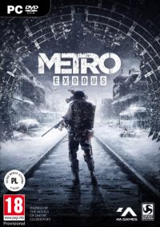
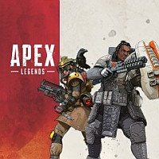
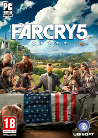
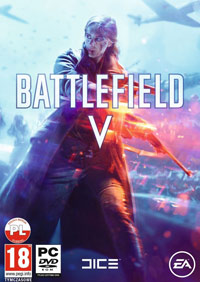

Metro Exodus to pierwszoosobowa strzelanka osadzona w klimatach postapokaliptycznych.
Gra jest kolejną odsłoną cyklu,
w skład którego wchodzą także Metro 2033 oraz Metro: Last Light.
Wszystkie trzy produkcje opracowało studio 4A Games.
W grze powracamy do postapokaliptycznej przyszłości,
gdzie cywilizację ludzką zniszczyła globalna wojna atomowa.

Apex Legends jest darmową (free-to-play) sieciową strzelanką FPP,
osadzoną w futurystycznym uniwersum serii Titanfall.
Produkcja jest spin-offem (powstała po skasowaniu trzeciej części cyklu) i należy do podgatunku battle royale,
reprezentowanego przez takie tytuły jak Playerunknown’s Battlegrounds, Fortnite: Battle Royale czy Dying Light: Bad Blood.

Pełnoprawna piąta odsłona bestsellerowego cyklu strzelanek FPP.
Podobnie jak w przypadku wcześniejszych odsłon (za wyjątkiem pierwszej),
za jej produkcję odpowiada studio Ubisoft Montreal.
W odróżnieniu od poprzedniczek, gra nie zabiera nas w podróż do egzotycznych miejsc, lecz na teren Stanów Zjednoczonych,
do Montany – jednego z najsłabiej zaludnionych zakątków tego kraju, leżącego na granicy z Kanadą.

Battlefield V jest kolejną częścią bestsellerowej serii strzelanek tworzonych przez należące do firmy Electronic Arts studio DICE.
Produkcja została osadzona w realiach II wojny, ale zamiast powrotu do korzeni cyklu,
autorzy postawili na własną, dość swobodną wizję tego konfliktu oraz pokazanie tych o wiele mniej znanych wydarzeń i miejsc.